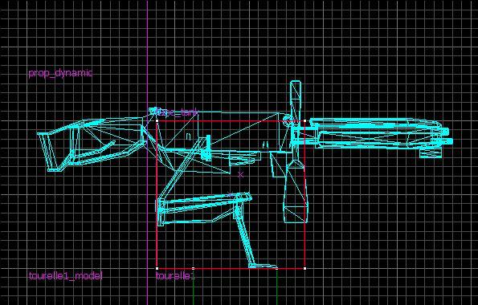
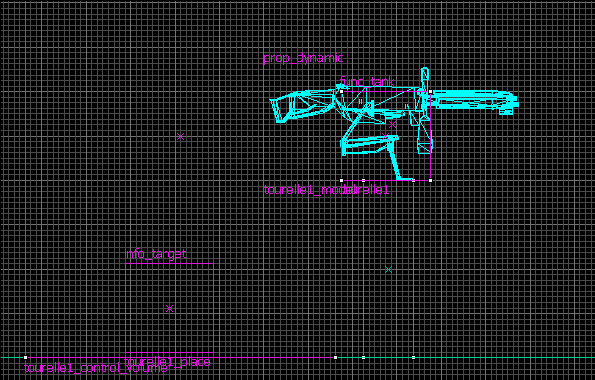
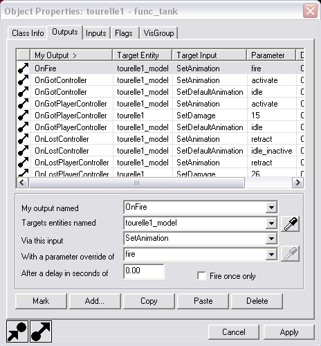

Vous voulez placer des mitrailleuses sur votre map dans une aventure solo ou pour HL2 DM, mais vous ne savez pas comment faire ? Pas de problème, je vais tout vous expliquer de A à Z : quelles entités utiliser, comment configurer ces dernières, comment permettre aux PNJ de les utiliser et ainsi augmenter encore un peu plus la difficulté (ou la facilité :p ) de vos maps.
un autre bloc trigger_multiple qui sera utilisé en option.
Tout d'abord, le support : je vous recommande de prendre un prop_static et de lui attribuer le modèle de barrière des combines : models/props_combine/combine_barricade_short01a.mdl.
Pour le modèle animé de l'arme : il faut utiliser un prop_dynamic, lui attribuer le modèle de mitrailleuse : models/props_combine/bunker_gun01.mdl et le placer sur le support à environ 40 unités du sol.
Pour le func_tank : créez un bloc de 16 unités de côté et utilisez de préférence la texture tools/toolsinvisible. Comme un dessin vaut mieux qu'un long discours (je suis surtout un gros paresseux :D ), placez votre func_tank comme sur le dessin suivant :

Son rôle est primordial : lorsque le joueur voit la mitrailleuse, il se met en position pour tirer et se sert de la touche « utiliser », il va ainsi activer le func_tank qui est en fait la commande de la mitrailleuse.
Ensuite il faut créer un trigger_multiple et le placer juste derrière la mitrailleuse ainsi qu'un info_target sur le sol, celui-ci indique au PNJ un endroit spécial où il doit se rendre pour utiliser la mitrailleuse.

On a fini de placer les entités, il suffit juste maintenant d'éditer leurs propriétés :-° .
Passons maintenant à l'édition des Outputs qui permettent d'envoyer des instructions à d'autres entités.
Tout d'abord un petit screenshot pour vous montrer à quoi ça ressemble :

Pour ajouter une nouvelle série d'instructions, cliquez sur Add puis remplissez les différentes cases avec les instructions présentes dans le cadre suivant de la manière suivante :
My output name / Targets entites named / Via this input / With a parameter override of/ After a delay in seconds
C'est long à remplir :soleil: mais ca vaut le coup.
Il ne nous reste plus (pour cette entité) qu'à cocher quelques cases dans l'onglet Flags :
Aiming Assistance
Active
NPC Controllable
Controllable
Maintenant le trigger_multiple utilisé pour entendre le son de la mitrailleuse quand on tire : dans l'onglet Class Info :
Name: tourelle1_control_volume
Et dans l'onglet Flags :
Clients
Ensuite le info_target. Dans l'onglet Class Info :
Name: tourelle1_place
À ce niveau, la mitrailleuse est parfaitement utilisable par le joueur et par les PNJ, mais il y a un problème : le combine ne lâche plus la mitrailleuse même si on est juste derrière elle.
On va donc créer un trigger_multiple que l'on placera de façon à ce que lorsque le joueur arrive près du combine, celui-ci lâche la mitrailleuse pour vous tirer dessus avec son arme :p .
Dans l'onglet Outputs :
OnStartTouch / tourelle1 / ForceNPCOff / 0.00
Et voilà c'est fini, y'a plus qu'à appuyer sur le bouton et tirer (ou se faire tirer dessus).
La première fois c'est très long mais après il faut juste utiliser le copier-coller et changer le numéro de la mitrailleuse. J'espère avoir été assez clair et que vous allez prendre plaisir à placer des mitrailleuses à tous les coins de rue sur vos maps :diable: .